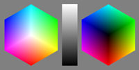
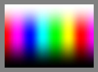
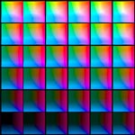

render/timage
Summary
Create TIFF test image, suitable for evaluating various color
transformations. By default a test image consisting of two hexagons and
a grey wedge is produced. The two hexagons are the white and black
corners of the RGB cube surface. This is useful in checking gamut
mapping behaviour applied to an RGB colorspace.

An alternate rectangular "rainbow" representation of the surface
of an RGB
cube can also be created.

A third type is a set of stepped rectangles that explore the L*a*b*
space, useful for testing profiles B2A tables (-p 6):

Usage Summary
usage: timage [-options] outfile.tif
-v
Verbose
-t
Generate rectangular boundary test chart
-p steps Generate a colorspace step chart
with L* steps^2
-r
res Resolution
in DPI (default 200)
-s
Smooth blend
-x
16 bit output
-g
prop Percentage towards grey
(default 0%)
outfile.tif Profile
to check against
Usage Details and Discussion
The -v flag increases verbosity.
The default behaviour is to create the two hexagon plus grey wedge test
image. If the -t flag is used,
the alternate single rectangular surface test image is generated.
If the -p steps parameter is
given, than an L*a*b* test chart is generated.
The dots per inch of the image can be set using the -r parameter. Increasing this,
increases the size and detail of the image.
Normally the images are generated using linear blending of the RGB
values. If the -s flag is
used, a smoother blending is employed. This is most desirable when
generating the rectangular test image.
Normally an 8 bit per color component image is generated. If the -x flag is use, a 16 bit per color
component image will be generated, giving smoother blends, particularly
if a higher resolution (DPI) image is created.
The hexagon and surface test images are normally the surface colors of
the RGB colorspace
cube. If a percentage greater than 0% is given as an argument to the -g option, a test chart composed of
colors away from the RGB cube surface, towards the center grey point
will be generated. 100% will generate a completely grey image. Values
of 10, 20 to 50% are more usual.
The L*a*b* step chart explores the range of L*a*b* values that are
handled by an L*a*b* PCS B2A table, with the L* stepping from 0 to 100
in steps from the top left to the bottom right square, while the a*
values range from -127 to 127 left to right in each square, and the b*
values range from -127 to 127 bottom to top in each square.
The last argument on the command line is the name of the TIFF file to
save the resulting image to.